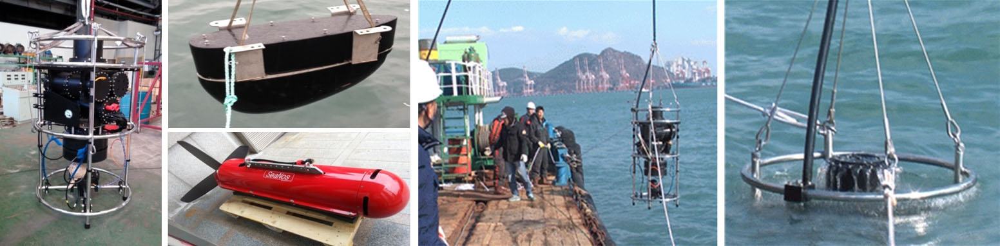

Sonar Testing System is kind of underwater speaker and generates sound to test operation performance and verification of submarine sonar System.
Applications
- Surface ship and submarine noise generation
- Passive / Active sonar performance test
- Low frequency sound source
Key Features
- Sound source generation of wide band (10Hz ~ 100kHz)
- Static assembly type & Hull-mounted assembly type
- Key technology: Low frequency underwater projector
- Omni-directional beam pattern
- High Power & Pressure compensation cylinder
